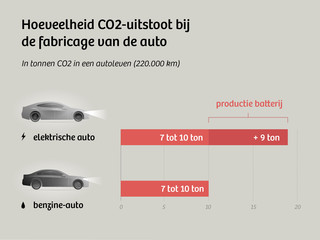
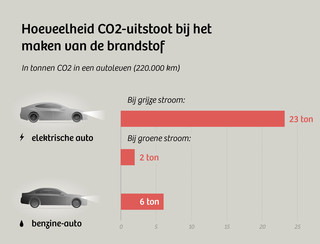

 Voor elektrische auto's worden voornamelijk li-ion batterijen gebruikt als krachtbron voor de elektrische motoren in de auto. En ondanks dat een elektrische auto heel goed lijkt te zijn voor het milieu, is het juist de productie van onder andere deze li-ion batterijen juist schadelijk voor het milieu. De grondstoffen voor deze accu's moeten worden opgegraven en vervolgens worden verwerkt tot accu's die gebruikt kunnen worden voor in auto's. Voorheen werden deze grondstoffen geconcentreerd op dezelfde plaats waar het werd opgegraven, maar omdat de vraag naar accu's voor auto's begint te stijgen worden diezelfde grondstoffen veel meer getransporteerd voordat ze zijn geconcentreerd met als gevolg dat het vervoer bijna drie keer zoveel energie kost. De li-ion batterijen die worden gebruikt voor de accu's bestaan uit meerdere grondstoffen, die grondstoffen zijn; koolstof, kobalt, nikkel en grafiet. Ook de landen waar deze grondstoffen worden opgegraven merken de gevolgen hiervan. In Congo, een van de landen waar ze grondstoffen vandaan halen, raakt het water besmet en verdwijnen bossen als gevolg van het opgraven.
 Maar het zijn niet alleen de accu's die slecht zijn voor het milieu, ook bij de rest van de auto is de productie schadelijk voor het milieu. Omdat het gewicht van de accu's voor elektrische auto's erg hoog is wordt er gewicht bespaard bij de rest van de auto door middel van lichtgewicht materialen. Het nadeel van deze materialen is dat het extra energie kost om ze de juiste vorm te geven voor de onderdelen van de auto's. De combinatie van deze 2 dingen zorgt ervoor dat de productie van elektrische auto's slechter is voor he milieu dan de productie van normale auto's.
Ondanks dat de productie van elektrische auto's slechter is voor het milieu dan de productie van normale auto's, zijn ze op de lange termijn beter voor het milieu. Elektrische auto's stoten namelijk geen schadelijke stoffen uit als ze eenmaal op de weg rijden. En omdat normale auto's schadelijke stoffen blijven produceren als ze op de weg rijden zullen ze dus ook slechter zijn voor het milieu dan elektrische auto's. Er gaan een aantal jaren van gebruik overheen voordat een elektrische auto beter is voor het milieu, maar dan begint het zich ook terug te verdienen.